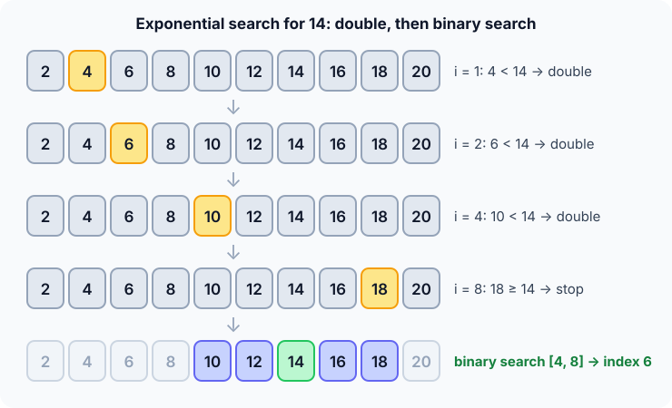

Prerequisites
- Binary search, which is the second phase.
- Powers of two: 1, 2, 4, 8, 16, …
- Logarithms: $\log_2 i$ doublings reach $i$.
The analogy
Everyday analogy
You're looking for a page in a long scroll whose end you can't see. You jump 1 page, then 2, then 4, then 8, until you overshoot. Then you search back carefully in the last jump.
Exponential search does exactly that. Doubling quickly brackets the target, even with no idea how long the array is, and binary search finishes inside the bracket.
How it works
Data requirement: the array must be sorted. Its length may be unknown or unbounded.
Start with one search by hand
Look for 14 in [2, 4, 6, 8, 10, 12, 14, 16, 18, 20]. a[0] = 2 is not it, so start doubling at i = 1. Guess first, then open "Check".
Example: predict before you read
Step 1. a[1] = 4 and a[2] = 6 are both < 14. Predict: which index do you check next?
Check
Double again: index 4, where a[4] = 10 < 14.
Step 2. Cover the next line and guess: at index 8 the value is 18. What now?
Check
18 ≥ 14, so stop doubling. 14 must be between index 4 (the last value that was too small) and index 8.
Step 3. Binary search indices 4..8. Predict: what is the first middle?
Check
Index 6, which holds 14: found. 4 doubling checks plus 1 binary-search probe.

Quick recall: Before reading further, cover the text above and say out loud: what does the doubling phase guarantee when it stops?
Check your answer
The target, if present, lies between index $i/2$ and index $i$, a range of about $i/2$ elements.
Finish the picture
Try two more targets in the same array.
- Search for 4. Predict: how many doubling steps?
Check
None. At
i = 1, a[1] = 4 is not < 4, so doubling stops at once and binary search checks the tiny range 0..1. - Search for 21, bigger than everything. Predict: where does doubling stop?
Check
At
i = 16, past the end, sohiis clipped to the last index, 9. Binary search on 8..9 then fails: −1.
Quick recall: Without scrolling up, say out loud: why was searching for 4 so much cheaper than searching for 14?
Check your answer
The cost depends on the target's position: 4 is near the front, so doubling stops almost immediately.
The rule in plain words
Check the first element. Then check indices 1, 2, 4, 8, … while the value is smaller than the target and you're inside the array.
When you stop at index $i$, run binary search on indices $i/2$ to $\min(i, n-1)$.
Quick recall: Before you read the code, write the three steps of exponential search in your own words. Then check below.
Check your answer
1. Handle the first element. 2. Double the index until the value there is at least the target or you leave the array. 3. Binary search between the last two indices you visited.
The code
Read this code after you have done one search by hand. It will make more sense.
int exponential_search(const int a[], int n, int x) {
if (n == 0) return -1;
if (a[0] == x) return 0;
int i = 1;
while (i < n && a[i] < x) i *= 2; /* double until we pass x */
int lo = i / 2, hi = i < n ? i : n - 1; /* x is in a[lo..hi] if anywhere */
while (lo <= hi) { /* plain binary search */
int mid = lo + (hi - lo) / 2;
if (a[mid] == x) return mid;
if (a[mid] < x) lo = mid + 1; else hi = mid - 1;
}
return -1;
}Definition
What you just did, in one line: exponential search finds a range $[i/2, i]$ containing the target by doubling $i$, then runs binary search inside it.
flowchart TD
A{"a[0] == x ?"} -->|yes| B["Return 0"]
A -->|no| C["i = 1"]
C --> D{"i < n and a[i] < x ?"}
D -->|yes| E["i = i * 2"]
E --> D
D -->|no| F["Binary search in a[i/2 .. min(i, n-1)]"]
How fast is it?
Quick recall: Before looking at the formula, predict: if the target is at index 1,000, about how many doublings are needed?
Check your answer
About 10, since $2^{10} = 1024$, however long the array is.
For a target at index $i$, doubling takes about $\log_2 i$ steps and the final range has about $i/2$ elements, so binary search adds another $\log_2 i$:
$$\underbrace{\log_2 i}_{\text{doubling}} + \underbrace{\log_2 (i/2)}_{\text{binary search}} \;=\; O(\log i) \;\le\; O(\log n).$$| Best | Average | Worst | Extra space | Data requirement |
|---|---|---|---|---|
| $O(1)$ | $O(\log i)$ | $O(\log n)$ | $O(1)$ | Sorted, size may be unknown |
Warning
Clip the upper end with min(i, n - 1). The last doubling can jump past the end of the array, and reading a[i] there is out of bounds.
Exam tip
The key phrase is "$O(\log i)$ where $i$ is the position of the target". That's why it beats binary search when targets are near the front, and why it suits unbounded lists.
Common mistakes
- Starting the doubling at
i = 0: 0 × 2 stays 0 forever. - Forgetting to clip
hiton - 1after the last doubling. - Searching
[0, i]instead of[i/2, i]: still correct, but it throws away what doubling learned.
Try it yourself
Exercise 1 (warm-up)
In [2, 4, 6, 8, 10, 12, 14, 16, 18, 20], search for 10. Where does doubling stop, and what range does binary search get?
Hint
Doubling continues only while a[i] < x.
Answer
It stops at i = 4, because a[4] = 10 is not < 10. Binary search gets 2..4 and finds 10 at index 4.
Exercise 2 (a bit harder)
An array has a billion sorted elements and the target is at index 40. Roughly how many comparisons does exponential search need, compared with plain binary search? Write your answer down before you open it.
Show answer
Exponential: doubling checks indices 1, 2, 4, …, 64 (7 checks), then binary search on 32..64 takes about 6, so roughly 13. Binary search: about $\log_2 10^9 \approx 30$.
Did you know?
Did you know?
Bentley and Yao described this "galloping" idea in 1976. Timsort uses it today when merging runs: it gallops ahead to find where a long block of elements ends.
It's worth knowing because many real searches happen in data without a known end: streams, linked pages of results, or a huge file read lazily.
Key points to remember
If you remember one thing from each line, remember the because.
- Doubling brackets the target because it stops at the first $i$ where $a[i] \ge x$, so $x$ lies in $[i/2, i]$.
- The cost is $O(\log i)$ because both phases depend only on the target's position $i$, not on $n$.
- It works on unbounded lists because it never needs to know $n$ in advance.
- It needs sorted data because both the doubling test and the binary search rely on order.
- Extra space is $O(1)$ because it only keeps a few indices.
Self-check questions
Answer these in order, out loud. They follow the page, so your answers become the script of your video.
- How is exponential search like searching a scroll with no visible end?
Sample answer
You jump 1, 2, 4, 8 pages ahead until you overshoot, then search back carefully in the last jump. That's doubling, then binary search.
- Walk through a search for 14 in [2, 4, …, 20].
Sample answer
Indices 1, 2 and 4 hold values below 14; index 8 holds 18, so stop. Binary search on 4..8 checks index 6 first and finds 14.
- Why does the code start doubling at
i = 1and checka[0]separately?A good answer says what doubling 0 gives.
Sample answer
Doubling 0 gives 0 forever, so the loop would never move. Starting at 1 lets it double, and index 0 is handled by its own check.
- So what is exponential search, in one sentence?
Sample answer
It doubles an index until it passes the target to find a range, then binary searches inside that range.
- Why is its cost $O(\log i)$ and not $O(\log n)$?
A good answer looks at both phases.
Sample answer
Doubling stops after about $\log_2 i$ steps, and the bracket it finds has about $i/2$ elements, so binary search also takes about $\log_2 i$. Neither phase looks beyond the target's neighbourhood.
- What are its best, average and worst cases?
Sample answer
Best $O(1)$ when the target is at index 0, typically $O(\log i)$, worst $O(\log n)$ when the target is near the end. Extra space $O(1)$.
- When is it better than plain binary search?
Sample answer
When targets are usually near the front of a big array, or when the array's length is unknown or unbounded, so binary search can't pick a middle.
- If you had to teach this to a friend in 2 minutes, what would you leave out, and why?
Sample answer
I'd leave out the clipping detail and the Timsort connection. I'd keep the scroll analogy, the 1-2-4-8 doubling on the example, and "double to bracket, binary search inside, $O(\log i)$".
External resources
- GeeksforGeeks: Exponential search: an article with code and its use on unbounded arrays.
- Wikipedia: Exponential search: history and the $O(\log i)$ analysis.
Videos
- YouTube search: exponential search algorithm: pick a short walkthrough.